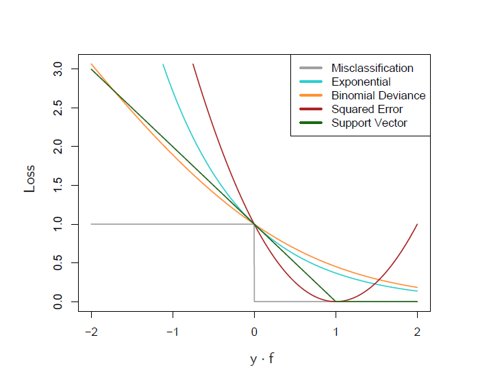
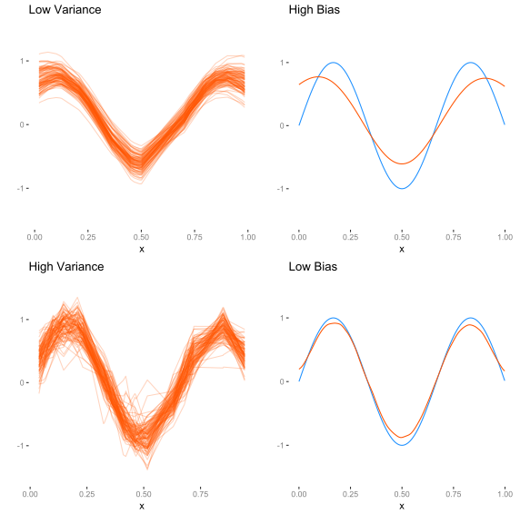

Concepts
Given a set of predictor variables \(X\) and some target \(y\), we look for some function \(f(X)\) to make predictions of y from those input variables. We also need a function to penalize errors in prediction, i.e. a loss function. With a chosen loss function, we then find the model which will minimize loss, generally speaking. We will start with the familiar and note a couple others that might be used.
Loss Functions
Continuous Outcomes
Squared Error
The classic loss function for linear models with a continuous numeric response is the squared error loss function, or the residual sum of squares.
\[L(Y, f(X)) = \sum(y-f(X))^2\]
Everyone who has taken a statistics course is familiar with this ‘least-squares’ approach on some level. Often they are not taught that it is one of many possible approaches. However, the average, or mean squared error is commonly used as a metric of performance (or it’s square root).
Absolute Error
For an approach that is more robust to extreme observations, we might choose absolute rather than squared error. In this case, predictions are a conditional median rather than a conditional mean.
\[L(Y, f(X)) = \sum|(y-f(X))|\]
Negative Log-likelihood
We can also think of our usual likelihood methods learned in a standard applied statistics course9 Well some of you. Many applied methods courses don’t teach the basic maximum likelihood approach, even thought it’s the most widely used of all techniques. as incorporating a loss function that is the negative log-likelihood pertaining to the model of interest. If we assume a normal distribution for the response we can note the loss function as:
\[L(Y, f(X)) = n\ln{\sigma} + \sum \frac{1}{2\sigma^2}(y-f(X))^2\]
In this case it would converge to the same answer as the squared error/least squares solution.
R Example
The following provides code that one could use with the optim function in R to find estimates of regression coefficients (beta) based on minimizing the squared error. X is a design matrix of our predictor variables with the first column a vector of 1s in order to estimate the intercept. y is the continuous variable to be modeled. We can then compare the results with the lm function from base R10 Type ?optim at the console for more detail..
sqerrloss = function(beta, X, y){
mu = X%*%beta
sum((y-mu)^2)
}
# data setup
set.seed(123)
N = 100
X = cbind(1, rnorm(N), rnorm(N))
beta = c(0, -.5, .5)
y = rnorm(N, X%*%beta, sd=1)
# results
our_func = optim(par=c(0,0,0), fn=sqerrloss, X=X, y=y, method='BFGS')
lm_result = lm(y ~ ., data.frame(X[,-1])) # check with lm
rbind(c(our_func$par, our_func$value), c(coef(lm_result), sum(resid(lm_result)^2))) (Intercept) X1 X2
[1,] 0.1350654 -0.6331715 0.5238113 87.78187
[2,] 0.1350654 -0.6331715 0.5238113 87.78187While lm uses a different approach, they are both going to result in the ‘least-squares’ estimates.
Categorical Outcomes
Here we’ll also look at some loss functions useful in classification problems. Note that there is not necessary exclusion in loss functions for continuous vs. categorical outcomes11 For example, if dealing with probabilities, we technically could use minimize squared errors in the case of classification also. We could use a maximum likelihood for either setting (or minimize the negative log likelihood to turn it into a loss function).. Generally though we’ll have different options.
Misclassification
Probably the most straightforward is misclassification, or 0-1 loss. If we note \(f\) as the prediction, and for convenience we assume a [-1,1] response instead of a [0,1] response:
\[L(Y, f(X)) = \sum I(y\neq \mathrm{sign}(f))\]
In the above, \(I\) is the indicator function, and so we are simply summing misclassifications.
Binomial log-likelihood
\[L(Y, f(X)) = \sum log(1 + e^{-2yf})\]
The above is in deviance formDeviance can conceptually be thought of as the GLM version of residual variance., but is equivalent to binomial log likelihood if \(y\) is on the 0-1 scale.
Exponential
Exponential loss is yet another loss function at our disposal.
\[L(Y, f(X)) = \sum e^{-yf}\]
Hinge Loss
A final loss function to consider, typically used with support vector machines, is the hinge loss function.
\[L(Y, f(X)) = \max(1-yf, 0)\]
Here negative values of \(yf\) are misclassifications, and so correct classifications do not contribute to the loss. We could also note it as \(\sum (1-yf)_+\) , i.e. summing only those positive values of \(1-yf\).

Which of these might work best may be specific to the situation, but the gist is that they penalize negative values (misclassifications) more heavily and increasingly so the worse the misclassification (except for misclassification error, which penalizes all misclassifications equally), with their primary difference in how heavy that penalty is. At right is a depiction of the loss as a functions above, taken from Hastie, Tibshirani, and Friedman (2009Hastie, Trevor, Robert Tibshirani, and Jerome Friedman. 2009. The Elements of Statistical Learning: Data Mining, Inference, and Prediction, Second Edition. 2nd ed. 2009. Corr. 10th Printing. Springer.).
Regularization
It is important to note that a model fit to a single data set might do very well with the data at hand, but then suffer when predicting independent data12 In terminology we will discuss further later, such models might have low bias but notable variance.. Also, oftentimes we are interested in a ‘best’ subset of predictors among a great many, and in this scenario the estimated coefficients are overly optimistic. This general issue can be improved by shrinking estimates toward zero, such that some of the performance in the initial fit is sacrificed for improvement with regard to prediction.
Penalized estimation will provide estimates with some shrinkage, and we can use it with little additional effort with our common procedures. Concretely, let’s apply this to the standard linear model, where we are finding estimates of \(\beta\) that minimize the squared error loss.
\[\hat\beta = \underset{\beta}{\mathrm{arg\, min}} \sum{(y-X\beta)^2}\]
In words, we’re finding the coefficients that minimize the sum of the squared residuals. With the approach to regression here we just add a penalty component to the procedure as follows.
\[\hat\beta = \underset{\beta}{\mathrm{arg\, min}} \sum{(y-X\beta)^2} + \lambda\overset{p}{\underset{j=1}{\sum}}{\left|\beta_j\right|}\]
In the above equation, \(\lambda\) is our penalty term13 This can be set explicitly or also estimated via a validation approach. As we do not know it beforehand, we can estimate it on a validation data set (not the test set) and then use the estimated value when estimating coefficients via cross-validation with the test set. We will talk more about validation later. for which larger values will result in more shrinkage. It’s applied to the \(L_1\) or Manhattan norm of the coefficients, \(\beta_1,\beta_2...\beta_p\), i.e. not including the intercept \(\beta_0\), and is the sum of their absolute values (commonly referred to as the lasso14 See Tibshirani (1996) Regression shrinkage and selection via the lasso.). For generalized linear and additive models, we can conceptually express a penalized likelihood as follows:
\[l_p(\beta) = l(\beta) - \lambda\overset{p}{\underset{j=1}{\sum}}{\left|\beta_j\right|}\]
As we are maximizing the likelihood the penalty is a subtraction, but nothing inherently different is shown. This basic idea of adding a penalty term will be applied to all machine learning approaches, but as shown, we can apply such a tool to classical methods to boost prediction performance.
Interestingly, the lasso and ridge regression results can be seen as a Bayesian approach using a zero mean Laplace and Normal prior distribution respectively for the \(\beta_j\).It should be noted that we can go about the regularization in different ways. For example, using the squared \(L_2\) norm results in what is called (a.k.a. Tikhonov regularization), and using a weighted combination of the lasso and ridge penalties gives us elastic net regularization.
R Example
In the following example, we take a look at the lasso approach for a standard linear model. We add the regularization component, with a fixed penalty \(\lambda\) for demonstration purposes15 As noted previously, in practice \(\lambda\) would be estimated via some validation procedure.. However you should insert your own values for \(\lambda\) in the optim line to see how the results are affected. I’ve also increased the number of predictors to 10.
# data setup
set.seed(123)
N = 100
X = cbind(1, matrix(rnorm(N*10), ncol=10))
beta = runif(ncol(X))
y = rnorm(N, X%*%beta, sd=2)
sqerrloss_reg = function(beta, X, y, lambda=1){
mu = X%*%beta
sum((y-mu)^2) + lambda*sum(abs(beta[-1]))
}
lm_result = lm(y~., data.frame(X[,-1]) )
regularized_result = optim(par=rep(0, ncol(X)), fn=sqerrloss_reg, X=X, y=y, method='BFGS')# Create test data
N_test = 50
X_test = cbind(1, rnorm(N_test), rnorm(N_test))
X_test = cbind(1, matrix(rnorm(N_test*10), ncol=10))
y_test = rnorm(N_test, X_test%*%beta, sd=2)
# squared error loss
crossprod(y_test - predict(lm_result, newdata = data.frame(X_test[,-1]))) [,1]
[1,] 218.2474crossprod(y_test - X_test%*%regularized_result$par) [,1]
[1,] 216.9351From the above, we can see in this case that the penalized coefficients have indeed shrunk toward zero slightly, while the residual sum of squares has increased just a tad. On the test data however, the squared error loss is lower.
In general, we can add the same sort of penalty to any number of models, such as logistic regression, neural net models, recommender systems etc. The primary goal again is to hopefully increase our ability to generalize the selected model to new data. Note that the estimates produced are in fact biased, but we have decreased the variance with new predictions as a counterbalance, and this brings us to the topic of the next section.
Bias-Variance Tradeoff
In most of science, we are concerned with reducing uncertainty in our knowledge of some phenomenon. The more we know about the factors involved or related to some outcome of interest, the better we can predict that outcome upon the influx of new information. The initial step is to take the data at hand, and determine how well a model or set of models fit the data in various fashions. In many applications however, this part is also more or less the end of the game as well16 I should note that I do not make any particular claim about the quality of such analysis. In many situations the cost of data collection is very high, and for all the current enamorment with ‘big’ data, a lot of folks will never have access to big data for their situation (e.g. certain clinical populations). In these situations getting new data for which one might make predictions is extremely difficult..
Unfortunately, such an approach in which we only fit models to one data set does not give a very good sense of generalization performance, i.e. the performance we would see with new data. While typically not reported, most researchers, if they are spending appropriate time with the data, are actually testing a great many models, for which the ‘best’ is then provided in detail in the end report. Without some generalization performance check however, such performance is overstated when it comes to new data.
In the following consider a standard linear model scenario, e.g. with squared-error loss function and perhaps some regularization, and a data set in which we split the data in some random fashion into a training set , for initial model fit, and atest set, which is a separate and independent data set, to measure generalization performance17 In typical situations there are parameters specific to some analytical technique for which one would have no knowledge, and which must be estimated along with the usual parameters of the standard models. The \(\lambda\) penalty parameter in regularized regression is one example of such a tuning parameter. In the best case scenario, we would also have a validation set, where we could determine appropriate values for such parameters based on performance with the validation data set, and then assess generalization performance on the test set when the final model has been chosen. However, methods are available to us in which we can approximate the validation step in other ways.. We note training error as the (average) loss over the training set, and test error as the (average) prediction error obtained when a model resulting from the training data is fit to the test data. So in addition to the previously noted goal of finding the ‘best’ model (model selection), we are interested further in estimating the prediction error with new data (model performance).
Bias & Variance
Much of the following is essentially a paraphrase of parts of Hastie, Tibshirani, and Friedman (2009Hastie, Trevor, Robert Tibshirani, and Jerome Friedman. 2009. The Elements of Statistical Learning: Data Mining, Inference, and Prediction, Second Edition. 2nd ed. 2009. Corr. 10th Printing. Springer.) (chapters 2 and 7).We start with a true data generating process for some target \(y\), expressed as a function of features \(X\). We can specify the true model as
\[y = f(X) + \epsilon\]
where \(f(x)\) is the expected value of \(y\) given \(X\), i.e. \(f(x) = E(y|X)\), and the expected value of the error 0, \(E(\epsilon)=0\), with some variance, \(\textrm{Var}(\epsilon) = \sigma^2_\epsilon\). In other words, we are talking about the standard regression model we all know and love. Now we can conceptually think of the expected prediction error at a specific input \(X = x_0\) as:
\[\text{Error}_{x_0} = \text{Irreducible Error} + \text{Bias}^2 + \text{Variance}\]
To better understand this, think of training models over and over, each time with new training data, but testing each model at input \(x_0\). The \(\text{Error}_{x_0}\) is the average, or expected value of the prediction error in this scenario, or \(E[(y - \hat f(x))^2|X=x_0]\), with \(\hat f\) our current estimate of the true underlying data generating function \(f\). In other words, we have three components to our general notion of prediction error:
Irreducible error: The variance of the (new test) target (\(\sigma^2_\epsilon\)). This is unavoidable, since our \(y\) is measured with error.
\(\textrm{Bias}^2\): the amount the average of our estimate varies from the true (but unknown) value (\(E(\hat f) - f\)). This is typically the result of trying to model the complexity of nature with something much simpler that the human brain can understand. While the simpler might make us feel good, it may not work very well.
Variance: the amount by which our prediction would change if we had estimated it using a different training data set (\(Var(\hat f)\)). Even with unbiased estimates, we could still see a high mean squared error due to high variance.
Slightly more formally, we can present this as follows, with \(h_0\) our estimated (hypothesized) value at \(x_0\):
\[\text{Error}_{x_0} = Var(\epsilon) + (\text{E}[h_0] - f(x_0))^2 + Var(h_0)\]
The latter two components make up the mean squared error in our previous demonstration. While they are under our control, they compete with one another such that oftentimes we improve one at the detriment of the other. In other words, bias and variance are not independent.
The Tradeoff
Outlining a general procedure, we start by noting the prediction error on a training data set with multiple models of varying complexity (e.g. increasing the number of predictor variables, adding polynomial terms, including interactions), and then assess the performance of the chosen models in terms of prediction error on the test set. We then perform the same activity for a total of 100 simulated data sets, for each level of complexity.
 The results from this process might look like the image to the right taken from Hastie, Tibshirani, and Friedman (2009Hastie, Trevor, Robert Tibshirani, and Jerome Friedman. 2009. The Elements of Statistical Learning: Data Mining, Inference, and Prediction, Second Edition. 2nd ed. 2009. Corr. 10th Printing. Springer.). With regard to the training data, we have \(\mathrm{error}_{\mathrm{train}}\) for one hundred training sets for each level of model complexity. The bold blue line notes this average error over the 100 sets by model complexity, and we can see that more complex models fit the data better. The bold red line the average test error (\(\mathrm{error}_{\mathrm{test}}\)) across the 100 test data sets, and it tells a different story.
The results from this process might look like the image to the right taken from Hastie, Tibshirani, and Friedman (2009Hastie, Trevor, Robert Tibshirani, and Jerome Friedman. 2009. The Elements of Statistical Learning: Data Mining, Inference, and Prediction, Second Edition. 2nd ed. 2009. Corr. 10th Printing. Springer.). With regard to the training data, we have \(\mathrm{error}_{\mathrm{train}}\) for one hundred training sets for each level of model complexity. The bold blue line notes this average error over the 100 sets by model complexity, and we can see that more complex models fit the data better. The bold red line the average test error (\(\mathrm{error}_{\mathrm{test}}\)) across the 100 test data sets, and it tells a different story.
Ideally we’d like to see low bias and (relatively) low variance, but things are not so easy. One thing we can see clearly is that \(\mathrm{error}_{\mathrm{train}}\) is not a good estimate of \(\mathrm{error}_{\mathrm{test}}\), which is now our focus in terms of performance. If we think of the training error as what we would see in typical research where one does everything with a single data set, we are using the same data set to fit the model and assess error. As the model is adapted to that data set specifically, it will be overly optimistic in the estimate of the error, that optimism being the difference between the error rate we see based on the training data versus the average of what we would get with many test data sets. We can think of this as a problem of overfitting to the training data. Models that do not incorporate any regularization or validation process of any kind are likely overfit to the data presented.
Generally speaking, the more complex the model, the lower the bias, but the higher the variance, as depicted in the graphic. Specifically however, the situation is more nuanced, where the type of problem (classification with 0-1 loss vs. continuous response with squared error loss18 See Friedman (1996) On Bias, Variance, 0/1 Loss and the Curse of Dimensionality for the unusual situations that can arise in dealing with classification error with regard to bias and variance.) and technique (a standard linear model vs. regularized fit) will exhibit different bias-variance relationships.

Figure adapted from Domingos (2012Domingos, Pedro. 2012. “A Few Useful Things to Know About Machine Learning.” Commun. ACM 55 (10). doi:10.1145/2347736.2347755.).
Diagnosing Bias-Variance Issues & Possible Solutions
Let’s assume a regularized linear model with a standard data split into training and test sets. We will describe different scenarios with possible solutions.
Worst Case Scenario
Starting with the worst case scenario, poor models may exhibit high bias and high variance. One thing that will not help this situation (perhaps contrary to intuition) is adding more data. You can’t make a silk purse out of a sow’s ear (usually), and adding more data just gives you a more accurate picture of how awful your model is. One might need to rework the model, e.g. adding new predictors or creating them via interaction terms, polynomials, or other smooth functions as in additive models, or simply collecting better and/or more relevant data.
Figure inspired by Murphy (2012Murphy, Kevin P. 2012. Machine Learning: A Probabilistic Perspective. The MIT Press.) (figure 6.5) showing the bias-variance tradeoff. Sample (left) and average (right) fits of linear regression using a Gaussian radial basis function expansion. The green line represents the true relationship. The top row shows low variance between one fit and the next (left) but notable bias (right) in that the average fit is off. Compare to the less regularized (high variance, low bias) situation of the bottom row. See the kernlab package for the fitting function used, and the appendix for the code used to produce the graph.
High Variance
When variance is a problem, our training error is low while test error is relatively high (overfitting problem). Implementing more shrinkage or other penalization to model complexity may help with the issue. In this case more data may help as well.
High Bias
With bias issues, our training error is high and test error is not too different from training error (underfitting problem). Adding new predictors/features, e.g. interaction terms, polynomials etc., can help here. Additionally reducing the penalty parameter \(\lambda\) would also work with even less effort, though generally it should be estimated rather than explicitly set.
Bias-Variance Summary
One of key ideas any applied researcher can take from machine learning concerns the bias-variance tradeoff and issues of overfitting in particular. Typical applied practice involves potentially dozens of models fit to the same data set without any validation whatsoever, yet only one or two are actually presented in publication. Many disciplines report nothing but the statistical significance, and yet one can have statistically significant predictors and have predictive capability that is no different from guessing. Furthermore very complex models are often fit to small data sets, compounding the problem.
It is very easy to describe science without ever talking about statistical significance. It is impossible to talk about science without talking about prediction. The bias-variance tradeoff is one way to bring the concerns of prediction to the forefront, and any applied researcher can benefit from thinking about its implications.
Cross-Validation
As noted in the previous section, in machine learning approaches we are particularly concerned with prediction error on new data. The simplest validation approach would be to split the data available into a training and test set as discussed previously. We estimate the model on the training data, and apply the model to the test data, get the predictions and measure our test error, selecting whichever model results in the least test error.  A hypothetical learning curve display the results of such a process is shown to the right. While fairly simple, other approaches are more commonly used and result in better estimates of performance19 Along with some of the other works cited, see Harrell (2015Harrell, F. 2015. Regression Modeling Strategies: With Applications to Linear Models, Logistic and Ordinal Regression, and Survival Analysis. Springer Series in Statistics. Springer International Publishing.) for a good discussion of model validation..
A hypothetical learning curve display the results of such a process is shown to the right. While fairly simple, other approaches are more commonly used and result in better estimates of performance19 Along with some of the other works cited, see Harrell (2015Harrell, F. 2015. Regression Modeling Strategies: With Applications to Linear Models, Logistic and Ordinal Regression, and Survival Analysis. Springer Series in Statistics. Springer International Publishing.) for a good discussion of model validation..
Adding Another Validation Set
One technique that might be utilized for larger data sets, is to split the data into training, validation and final test sets. For example, one might take the original data and create something like a 60-20-20% split to create the needed data sets. The purpose of the initial validation set is to select the optimal model and determine the values of tuning parameters. These are parameters which generally deal with how complex a model one will allow, but for which one would have little inkling as to what they should be set at before hand (e.g. our \(\lambda\) shrinkage parameter in regularized regression). We select models/tuning parameters that minimize the validation set error, and once the model is chosen examine test set error performance. In this way performance assessment is still independent of the model development process.

An illustration of 3-fold classification.
K-fold Cross-Validation
In many cases we don’t have enough data for such a split, and the split percentages are arbitrary anyway, with results that would be specific to the split chosen. Instead we can take a typical data set and randomly split it into \(\kappa=10\) equal-sized (or close to it) parts. Next, we take the first nine partitions, combine them, and use them as the training set. With chosen model from the training data, make predictions on the held out partition. Now we do it again, but this time use the 9th partition as the holdout set. Repeat the process until each of the initial 10 partitions of data have been used as the test set. Average the error across all procedures for our estimate of prediction error. With enough data, this (and the following methods) could be used as the validation procedure before eventual performance assessment on an independent test set with the final chosen model.
Leave-one-out Cross-Validation
Leave-one-out (LOO) cross-validation is the same thing but where \(\kappa=N\). In other words, we train a model for all observations except the \(\kappa^{th}\) one, assessing fit on the observation that was left out. We then cycle through until all observations have been left out once to obtain an average accuracy.
Of the two, K-fold may have relatively higher bias but less variance, while LOO would have the converse problem, as well as possible computational issues20 For squared-error loss situations, there is a Generalized cross-validation (GCV) that can be estimated more directly without actually going to the entire LOO procedure, and functions similarly to AIC.. K-fold’s additional bias would be diminished would with increasing sample sizes, and generally 5 or 10-fold cross-validation is recommended. However, many model selection techniques (e.g. via AIC) have a leave-one-out interpretation.
Bootstrap
With a bootstrap approach, we draw \(B\) random samples with replacement from our original data set, creating \(B\) bootstrapped data sets of the same size as the original data. We use the \(B\) data sets as training sets and, using the original data as the test set, average the prediction error across the models.
Other Stuff
Along with the above there are variations such as repeated cross validation, the ‘.632’ bootstrap and so forth. One would want to do a bit of investigating, but \(\kappa\)-fold and bootstrap approaches generally perform well. If variable selection is part of the goal, one should be selecting subsets of predictors as part of the cross-validation process, not at some initial data step.